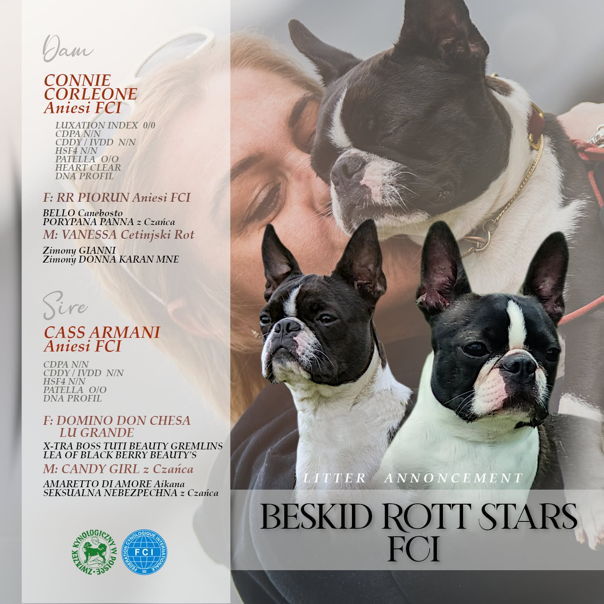

⭐️ CONNIE CORLEONE Aniesi FCI
(RR PIORUN Aniesi FCI × VANESSA CETINJSKI ROT)
- 📌 CDPA N/N
- 📌 CDDY / IVDD N/N
- 📌 HSF4 N/N
- 📌 PATELLA LUXATION INDEX 0/0
- 📌 HEART CLEAR
- 📌 DNA PROFIL
Domowa hodowla ras Rottweiler i Boston Terrier
Nasze psyNasza przepiękna CONNIE jest już po bardzo udanej randce z ARMANI ❤️.
Maleństwa będą gotowe do opuszczenia rodzinnego gniazda w połowie stycznia 2027 🌸🪷🌺.
Jeśli ktoś jest zainteresowany tym wyjątkowym skojarzeniem serdecznie zapraszam do kontaktu 👍.
(RR PIORUN Aniesi FCI × VANESSA CETINJSKI ROT)
(DOMINO DON CHESA LU GRANDE × CANDY GIRL z Czańca)

Nasza hodowla Rottweilerów i Boston Terrierów to miejsce stworzone z prawdziwej pasji, miłości do psów oraz głębokiego szacunku dla tych wyjątkowych ras. Każdy nasz pies jest nie tylko reprezentantem najwyższej jakości hodowlanej, ale przede wszystkim pełnoprawnym członkiem naszej rodziny.
Psy mieszkają z nami w domu, uczestniczą w codziennym życiu i są otoczone troską, bliskością oraz uwagą od pierwszych dni życia. Dzięki temu są doskonale zsocjalizowane, zrównoważone i przygotowane do życia u boku swoich przyszłych opiekunów.
Szczególną wagę przywiązujemy do zdrowia, charakteru oraz zgodności ze wzorcem rasy. Nasze psy regularnie biorą udział w krajowych i międzynarodowych wystawach, zdobywając liczne tytuły, championaty oraz uznanie sędziów kynologicznych. To dla nas nie tylko powód do dumy, ale również potwierdzenie jakości naszej pracy hodowlanej.
Hodowla to dla nas coś więcej niż zajęcie - to styl życia, odpowiedzialność i nieustanne dążenie do doskonałości. Każdy miot jest starannie planowany, a przyszłym właścicielom oferujemy wsparcie, wiedzę oraz pomoc na każdym etapie wspólnej drogi z psem.
Tworzymy miejsce, w którym rodzą się nie tylko piękne i zdrowe psy, ale przede wszystkim wierni towarzysze na całe życie.
Hodowla psów rasy Rottweiler i Boston Terrier prowadzona w domu